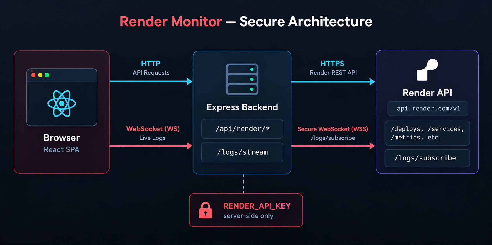

◫
Dashboard
Service counts, live/suspended status, latest deployments per service, and recent build or update failures at a glance.
A read-only dashboard for your Render infrastructure. Track services, deployments, logs, and metrics from one fast interface — while your API key stays firmly server-side.
Eight focused pages covering services, deployments, logs, and metrics — all reading directly from the Render API.
Service counts, live/suspended status, latest deployments per service, and recent build or update failures at a glance.
Browse web services, private services, workers, cron jobs, and static sites with region, runtime, and plan.
Per-service overview, event history, and deployment timeline in one place.
Recent deploys across all services with status, trigger, commit, and timing information.
Query historical logs with time-range presets and filters, plus a live WebSocket log stream.
Charts for CPU, memory, HTTP requests and latency, bandwidth, disk usage, and instance count.
Two terminals, a Render API key, and you're up and running locally.
cd server
npm install
cp .env.example .env
# set RENDER_API_KEY in .env
npm run devListens on http://localhost:3001.
cd client
npm install
cp .env.example .env
npm run devOpens on http://localhost:5173.
Verify the connection
Visit http://localhost:3001/api/render/connection/status.
A healthy setup returns {"connected":true}.
A thin backend proxies every request to the Render API and injects the bearer token server-side.

Set it up locally in minutes, then deploy it to Render itself.